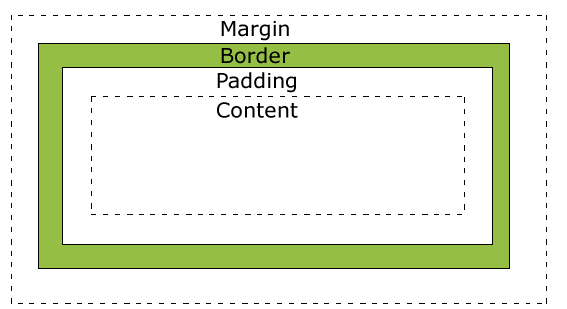

What is the difference between Margin, Border, and Padding?
This is the issue that bothered me most when I was learning how to use CSS. Codeacademy is a great resource, but it has the disadvantage of showing you how to do something, without taking the time to tell you why it works, or the reasons for using it. So when I was learning CSS positioning, I typed out
"div { border: 1px solid black; margin: auto; padding: 30px 10px 30px 10px; }"
without really understanding how to use it in a real life situation. Further research and review has given me a greater grasp on this topic, however.
W3schools.com provided a diagram explaining the “box model” for html and css. In essence, all content in an html page is divided into little boxes, and much of website design is focused on manipulating these boxes into the shapes and places you want them to be. The box consists of four parts: content, padding, border, and margin, as seen here:
Think of it like a delicate package you want to mail to your grandmother. The content is the adorable ceramic llama you found at the flea market.
The border is the box you selected to ship it in. Now, you don't want the little llama to bounce around inside the package, so you fill it with lots of bubblewrap, and nest the llama inside of it. That bubblewrap is the padding, or the distance you've selected between the content and the border.
Finally, the margin is a sticker you slap onto the box that says “Danger: Keep 2 Feet Away From Other Boxes or Risk Annihilation.” Not standard packaging practice, you know, but you don't want to take any chances. That sticker is the margin, the distance you want to keep your box away from other content on your page.
In CSS, you can edit everything about an element. The border is pretty simple. You can select how thick it is, what color it is, and if its solid, dashed, or dotted. It always conforms to the height and width of your box.
Padding and margin, on the other hand, are a little trickier. You can either enter in the dimensions of all four sides, in this order: top right bottom left, or you can just select one using margin-left, for example.
Padding is dangerous to work with, because it will change the height and width of your box if you're not careful. Margins are also tricky, since they can send your box zooming around your page. When experimenting with the padding and margins of an element on your page, preview it often, to make sure you don't have things bumping into one another.
And that's the difference between borders, padding, and margins! I hope you all enjoyed this presentation, and that you now can mail your ceramic chachkies safely!